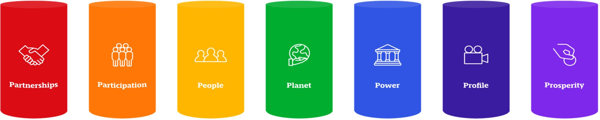

Making the best, not the easiest choices.
We understand that the CHL has a responsibility in all three areas. And we are
committed to taking that responsibility and doing everything in our power to be an
industry leader, even though the circumstances may not make it an easy task. The CHL
is an international sports competition. One whose unique value proposition also lies
in the fact that teams from different countries and cultures travel and compete. One
whose aim is to mobilise and entertain as many people as possible and one that does
not per se exist to make this world a safer, cleaner or more equal place. But that
doesn’t mean we can’t look at everything we do and consider the options we have to
improve our doing and also, use our public awareness to create an impact. In the
end, being sustainable, being responsible is also about making the most responsible
choices.
A transparent framework
On this website, we would like to be transparent about the choices we have made in
the past, about the choices we are currently making and about the choices we look
forward to making in the future.
Transparency requires an easy-to-understand framework that helps our clubs, fans,
business partners and other stakeholders comprehend what it is we are doing at the
CHL with regards to sustainability. We want to inform but also inspire because we
know that for us as a pan-European club competition our scope is only limited. It is
the teams that compete in our competition and it’s the national leagues that send
those teams to compete. They are the key to making this a successful journey.
Up until today there hasn’t been a standard framework for guiding or expressing the
sustainable activities of a sports organisation. The
UN Sustainable Development Goals are to a
certain degree also used in sports, but the fact that they were initially developed
by countries for countries cannot be denied. The more financially driven
ESG-approach is also one that can be found in sports, but we think it is not
accurate enough in our case.
However, without a clear framework to express our activities it is difficult to show
the true social, economic, and environmental impact we have on society and
the planet, whether positive or negative.
Introducing the 7 Pillars of Sustainable Sport
That is why we are excited to be one of the first organisations to work with the
Global Sustainable Sport’s (GSS) 7 Sustainable Pillars of Sport framework. Global
Sustainable Sport has worked with a variety of academics and stakeholders to produce
a standard framework and a standard approach to express the sustainable
activities of a sports organisation.
Based on existing frameworks and in-depth research and analysis, the seven
pillars cover the full spectrum of sport referencing the UN SDGs, as well, yet
clustering them in a way that is more appropriately suited for sports organisations:

It is important to mention that the framework was developed for different players in
sport, e.g. clubs, federations, leagues or events. So not all pillars work the same
way or are equally important for each player. Take Participation for example. A mass
participation event engaging thousands of people to be physically active is hard to
compare to a best-on-best competition where most participants are sitting in the
stands merely watching. We have taken this fact into consideration, and more
information on each pillar can be found below.
A word on digitalisation
A special segment on this website has been dedicated to the aspect of
digitalisation. Since we started in 2014/15, we have tried to be at the forefront of
what’s possible in the digital sports landscape. Whether it is our official website,
our social media channels, game statistics, the CHL App or the way how we
communicate and collaborate with the participating teams; being a young and dynamic
league paved the way for some ground-breaking digital innovations. At the same time
this digital footprint has been a key element of our sustainability actions. By
leveraging the advantages of a digital-first approach in terms of how the games are
conducted, how the communication within the league works and how we interact with
fans, there have been a number of advantages which we want to outline further down
below.
The CHL has always run on a very lean organisational structure. Collaboration and
strong partnerships based on professional relationships have made us what we are
today. Our approach towards responsibility should reflect this. With our limited
human and financial resources, we would like to tackle our impacts in an effective
and efficient way, meaning that we want to do the right things and we want to do
things right.
That being said, we just want you to know that we welcome any feedback or
suggestions on what we can still do better.

{kind=link}